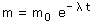

b)
Ecuación de desintegración en función de la masa:


Vamos a justificar el resultado:
Cada 10 años que pasan, la cantidad de sustancia radioactiva se reduce a la mitad, por tanto la cantidad de sustancia restante será:
80 (0 a), 40 (10 a), 20 (20 a), 10 (30 a)
Efectivamente: en 30 años quedarán 10 mg de sustancia radioactiva